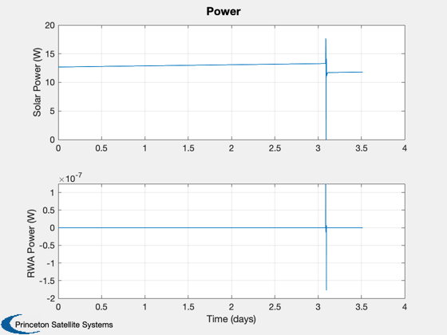
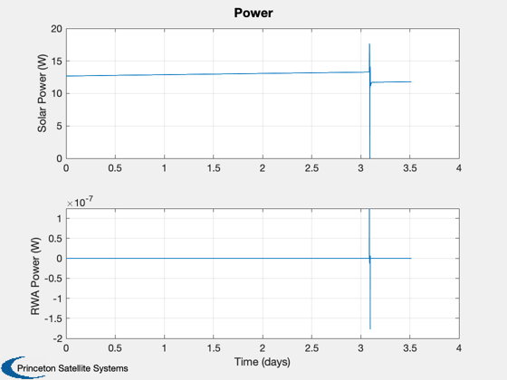

Lunar Mission Demo
Simulate a mission from Earth orbit to lunar orbit. The spacecraft has 3 orthogonal reaction wheels and a single delta-v thruster. The mission plan does not perform the lunar insertion burn.
It uses the default values from RHSLunarMission for a 6U CubeSat. The dimensions are 30 x 20 x 10 cm.
Contents
%-------------------------------------------------------------------------- % Copyright (c) 2016 Princeton Satellite Systems, Inc. % All rights reserved. %-------------------------------------------------------------------------- % Since 2016.1 % 2020.1 Fixed the lunar insertion burn and the lunar orbit plotting %--------------------------------------------------------------------------
Constants
rMoon = 1738; dayToSec = 86400;
User inputs
dateEncounter = [2016 5 10 1 30 0]; % "Encounter" is passing into lunar sphere of influence dT = 2; % integration time step seconds el0 = [7000 0 0 0 0]; rLunarOrbit = 3000; % km incLunarOrbit = 1; surfaceMagnificationFactor = 10; % For lunar terrain display timeAdded = 36000; % sec added simulation time after intercept useSphericalHarmonics = 0;
Control setup
% Find transfer orbit to the moon jDEncounter = Date2JD( dateEncounter ); InterpolateState([],[],'bin2000.405'); if( HasOptimizationToolbox ) [x0,el,~,jD0,jDP] = LunarTargeting( jDEncounter, el0, rLunarOrbit, incLunarOrbit, [], true ); else disp('LunarMission: Optimization toolbox not installed; using hard-coded values.') x0 = [-2.8408 6.3976 0 -0.0034 0.0099 0.0018]'*1e3; el = [-5.2588 0.0010 0.0001 0.0041 0.0016 0.0088]*1e3; jD0 = 2.457514449298204e+06; end tEnd = (jDP-jD0)*dayToSec + timeAdded; % Get the default data structure dC = LunarMissionControl; dC.dT = dT; dC = LunarMissionControl('initialize',jD0,dC); dRHS = RHSLunarMission; if( useSphericalHarmonics ) dRHS.sphHarmMoon = LoadSGM150( 'SGM150.geo' ); %#ok<*UNRCH> dRHS.sphHarmMoon.nN = 3; dRHS.sphHarmMoon.nM = 3; end % Set up the control data structure dC.mass = struct('mass',dRHS.mass,'inertia',dRHS.inertia,'cM',dRHS.surfData.cM); dC.rWA = dRHS.rWA; % This command list is for an lunar orbit insertion cList = { jDP-1e3/dayToSec,... 'lunar orbit insertion prepare',... struct('thrust',20,'massInitial',6, 'uE', 290*9.806,'body_vector',[1;0;0],'hLunarOrbit',200);... +2,... 'align for lunar insertion',... [];... +1e3,... 'start main engine',... struct('iD',1,'thrust',20)}; % Initial state setup qECIToBody = [1;0;0;0]; omega = [0;0;0]; % rad/s omegaRWA = [0;0;0]; % rad/s accelBias = [0;0;0]; % km/s^2 gyroBias = [0;0;0]; % rad/s massFuel = 3; % kg
Your initial point x0 is not between bounds lb and ub; FMINCON
shifted x0 to strictly satisfy the bounds.
First-order Norm of
Iter F-count f(x) Feasibility optimality step
0 5 1.338059e+01 1.153e+04 1.441e+00
1 19 1.200025e+01 1.039e+04 4.190e+00 3.551e-01
2 28 1.055581e+01 4.551e+03 4.925e-03 3.816e-01
3 34 1.055585e+01 4.484e+03 1.071e-02 5.354e-02
4 39 1.057161e+01 2.404e+03 1.820e+00 9.663e-02
5 44 1.055624e+01 3.164e+02 1.801e-02 2.845e-02
6 49 1.055633e+01 1.124e+02 1.893e-02 1.812e-02
7 54 1.055629e+01 4.419e-01 1.922e-02 1.105e-02
8 60 1.055615e+01 1.429e-05 1.934e-02 4.267e-02
9 87 1.055615e+01 3.289e-06 5.388e-03 1.547e-04
10 94 1.055607e+01 2.399e-01 5.491e-03 2.592e-02
11 111 1.055607e+01 4.802e-03 3.792e-03 1.876e-04
12 132 1.055607e+01 7.692e-04 3.792e-03 7.693e-05
13 138 1.055607e+01 8.022e-04 3.792e-03 1.663e-04
14 154 1.055607e+01 7.678e-07 3.792e-03 2.404e-06
15 168 1.055607e+01 3.671e-08 3.792e-03 5.258e-07
16 181 1.055607e+01 6.672e-09 3.793e-03 2.301e-07
17 195 1.055607e+01 3.693e-10 3.792e-03 5.033e-08
18 209 1.055607e+01 9.595e-11 3.793e-03 1.101e-08
19 222 1.055607e+01 7.776e-11 3.792e-03 4.816e-09
20 235 1.055607e+01 8.868e-11 3.792e-03 2.107e-09
21 249 1.055607e+01 4.275e-11 3.793e-03 4.609e-10
22 262 1.055607e+01 2.638e-11 3.793e-03 2.017e-10
23 275 1.055607e+01 5.002e-12 3.792e-03 8.823e-11
Optimization stopped because the relative changes in all elements of x are
less than options.StepTolerance = 1.000000e-10, and the relative maximum constraint
violation, 4.338970e-16, is less than options.ConstraintTolerance = 1.000000e-04.
Hyperbolic Lunar Elements
Radius of perilune 3000.00 km
Semi major axis -456.07 km
Inclination 57.30 deg
Longitude 251.32 deg
Perigee 82.49 deg
Eccentricity 7.58
Mean anomaly 6821.23 deg
Start JD 2457514.6975 day
Transfer Time 3.8650 days
Initialize the simulation model
% Initialize JPL Ephemerides to include the Sun, Earth and Moon PlanetPosJPL( 'initialize', [0 3 10] ); nSim = ceil(tEnd/dT); dRHS.jD0 = jD0; x = [x0;qECIToBody;omega;massFuel;dRHS.power.batteryCapacity;... accelBias;gyroBias;omegaRWA]; % This initializes the state and auxiliary output names RHSLunarMission( x );
Run the simulation
t = 0; xP = zeros(length(x),nSim); [~, p] = RHSLunarMission( x, t, dRHS ); pP = zeros(length(p.auxNames),nSim); % Globals for the time tracking GUI global simulationAction simulationAction = ' '; for k = 1:nSim % Plot storage [~, p] = RHSLunarMission( x, t, dRHS ); q = x(7:10); xP(:,k) = x; pP(:,k) = p.aux; % The controller jD = jD0 + t/dayToSec; dC.rMoon = pP(21:23,k); dC.vMoon = pP(24:26,k); [dC, dRHS] = LunarMissionControl( 'update', jD, dC, dRHS, x, cList ); % Propagate x = RK4(@RHSLunarMission,x,dT,t,dRHS); t = t + dT; switch simulationAction case 'pause' pause simulationAction = ' '; case 'stop' LunarMissionControl( 'terminate' ); return; case 'plot' break; end end LunarMissionControl( 'terminate' );
jD 2457517.78528 lunar orbit insertion prepare jD 2457517.78530 align for lunar insertion jD 2457517.79687 start main engine
Plot the results
if k<nSim xP = xP(:,1:k); pP = pP(:,1:k); nSim = k; end tS = (0:nSim-1)*dT; jD = jD0 + t/dayToSec; % in days [t,tL] = TimeLabl(tS); % Plot the states k = 1:3; Plot2D(t,xP(k,:),tL,p.stateNames(k),'Position'); k = 4:6; Plot2D(t,xP(k,:),tL,p.stateNames(k),'Velocity'); k = 7:10; Plot2D(t,xP(k,:),tL,p.stateNames(k),'Quaternion'); k = 11:13; Plot2D(t,xP(k,:),tL,p.stateNames(k),'Angular Velocity'); k = 14:15; Plot2D(t,xP(k,:),tL,p.stateNames(k),'Fuel and Battery'); k = 16:18; Plot2D(t,xP(k,:),tL,p.stateNames(k),'IMU Accel Bias'); k = 19:21; Plot2D(t,xP(k,:),tL,p.stateNames(k),'IMU Gyro Bias'); k = 22:24; Plot2D(t,xP(k,:),tL,p.stateNames(k),'Reaction Wheel Rates'); % Plot the auxiliary outputs k = 4:6; Plot2D(t,pP(k,:),tL,p.auxNames(k),'Thruster Force'); k = k+3; Plot2D(t,pP(k,:),tL,p.auxNames(k),'Solar Torque'); k = 10:12; Plot2D(t,pP(k,:),tL,p.auxNames(k),'Solar Force'); k = 13:14; Plot2D(t,pP(k,:),tL,p.auxNames(k),'Power'); k = 21:23; dR = xP(1:3,:) - pP(k,:); dV = Mag(xP(4:6,:) - pP(24:26,:)); h = Mag(dR) - rMoon; yL = {'x (km)', 'y (km)', 'z (km)', 'h (km)' '|v| (km/s)'}; Plot2D(t,[dR;h;dV],tL,yL,'Moon Relative Position'); % Plot the trajectory for the Earth/Moon transfer EarthMoon( xP(1:3,:), jD, [1, 1], pP(21:23,:) ); % Display from encounter time jD = jD0 + tS/dayToSec; kB = find(jD>jDEncounter); if ~isempty(kB) k = kB(1):nSim; dR = dR(:,k); jD = jD(1,k); uSun = SunV1(jD(1)); PlotLunarOrbit( dR, jD, uSun, pP(4:6,k), surfaceMagnificationFactor ); end Figui; %--------------------------------------

 
